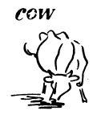
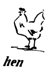

Mr. Smith’s brother is a farmer. He has a farm in the country. Mr. Smith’s house is not in the country; it is in a city. Every summer Mr. Smith and his family go to his brother in the country for the summer-holidays. In August, when the children do not go to school, it is their summer-holidays. Mr. Smith’s summer-holidays are not so long as the children’s; they are only two weeks. He works more than eleven months a year and has two weeks’ holidays.
The children have one month’s holidays in summer, but they do not work eleven months at school. They also have other holidays; they have two weeks’ holidays in December and Janurary, two weeks’ holidays in spring, and one week’s holidays in autumn. Mrs. Smith works too; but she does not go away from home to work; she works in her house.
What is Mr. Smith’s brother? He is a farmer. Where is his farm? His farm is in the country. When do Mr. Smith and his family go to his brother’s farm? They go there in summer for Mr. Smith’s holidays. Are Mr. Smith’s holidays as long as the children’s? No, he has only two weeks’ holiday in summer; the children have one month’s holidays. How many months does Mr. Smith work a year? He works more than eleven months a year. Does he work on Sundays? No, on Sundays he does not work; Sunday is a holiday. Is Monday also a holiday? No, Monday is a weekday. Friday is also a weekday. Thursday is a weekday to. Wednesday is a weekday too. All the days of the week are weekdays, except Sunday; Sunday is a holiday. Mr. Smith is at the farm every summer. He has been there every summer for many years. He was there last summer. He will go there this summer. John is twelve years old this year. Last year he was eleven years old; next year he will be thirteen years old. Helen is ten years old this year. Last year she was nine years old; next year she will be eleven years old. Baby is six months old this year; last year there was no baby. John said to his teacher, “This pencil is not very good; will you give me another one?”
John and Helen have been at the farm every summer for many years. Mr. Smith has had his family with im every year. Were Mr. Smith and his family at the farm last year? Yes, they were. Do they go there every year? Yes. they do; Mr. Smith has been at the farm every summer for many years, and his wife and children have been with him. Has Mr. Smith had his family with him? Yes, the parents have their children with them at the farm. Mr. Smith’s brother is the uncle of John and Helen; his brother’s wife is their aunt. John is the nephew of Mr. Smith’s brother, and Helen is his niece. Has John an uncle? Yes, his father’s brother, Mr. Smith, is his uncle, and John is his nephew. Who is Helen’s aunt? Her aunt is the wife of her uncle, Mr. Smith, and Helen is her niece.
At the farm there are many animals. A cow is an animal, and a hen is an animal. From the cows we get milk. From the hens we get eggs. What animals are there ar the farm? There are cows and hens. From what animals do we get milk? We get milk from the cow. What do we get from the hens? We get eggs from the hens. From where do we get fruit? We get fruit from the trees in the garden. From the milk we get cream, and from the cream the farmer’s wife makes butter.
In the morning, Mr. and Mrs. Smith drink coffee. The children do not drink coffee; coffee is not good for children; they drink milk or tea. Mrs. Smith puts cream in her coffee; Mr. Smith puts both cream and sugar in his coffee. In England people drink much tea. The English do not put cream in their tea; they put milk in their tea. When John comes home from school, he puts his books away in his room.
What do Mr. and Mrs. Smith drink in the morning? They drink coffee. Who makes the coffee? Mrs. Smith makes it. What do they put in their coffee? Mr. Smith puts both cream and sugar in his coffee, but Mrs. Smith puts only cream in her coffee. What do the English put in their tea? They put milk in their tea. Do the children drink coffee? No, they do not drink coffee; coffee is not good for children. They get tea or milk to drink. Who makes the butter at the farm? The farmer’s wife makes it. From what does she make it? She makes it from cream? Where does she get the cream from? She gets it from the milk.